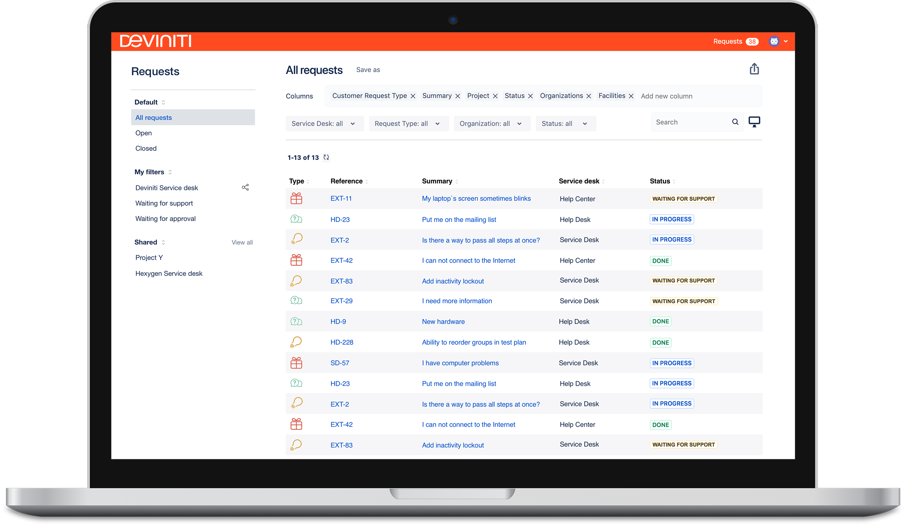
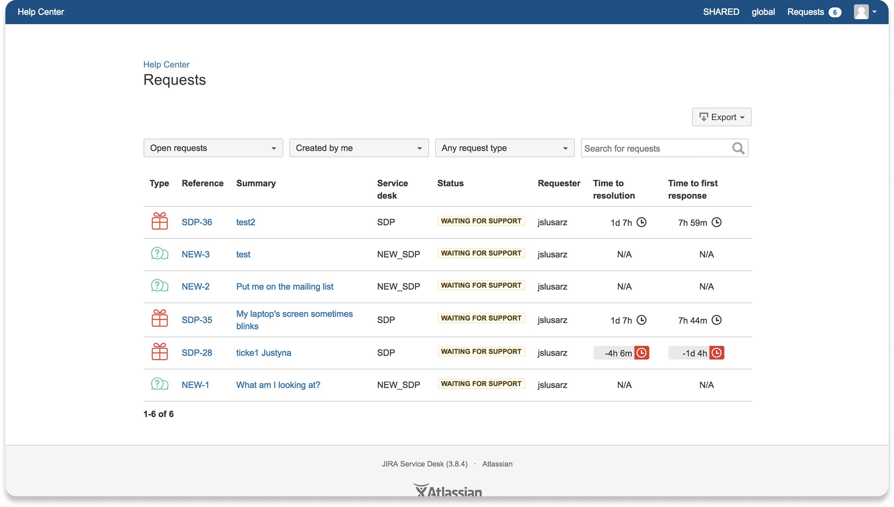
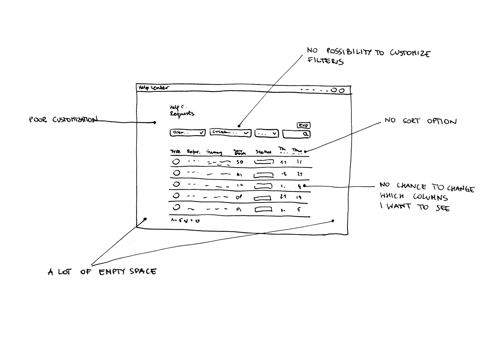
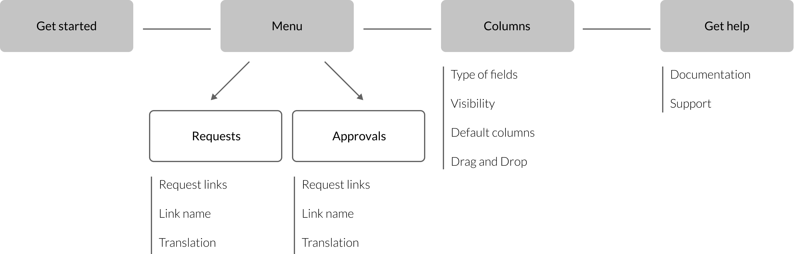
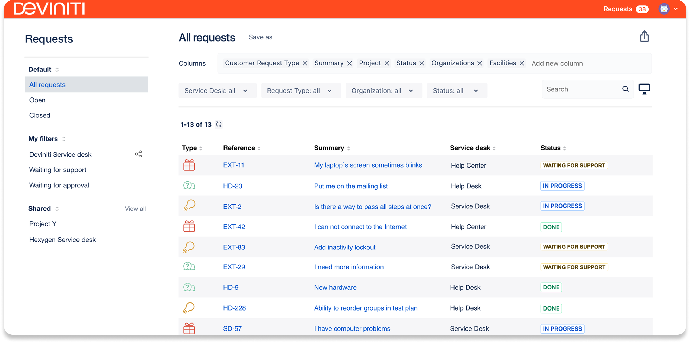
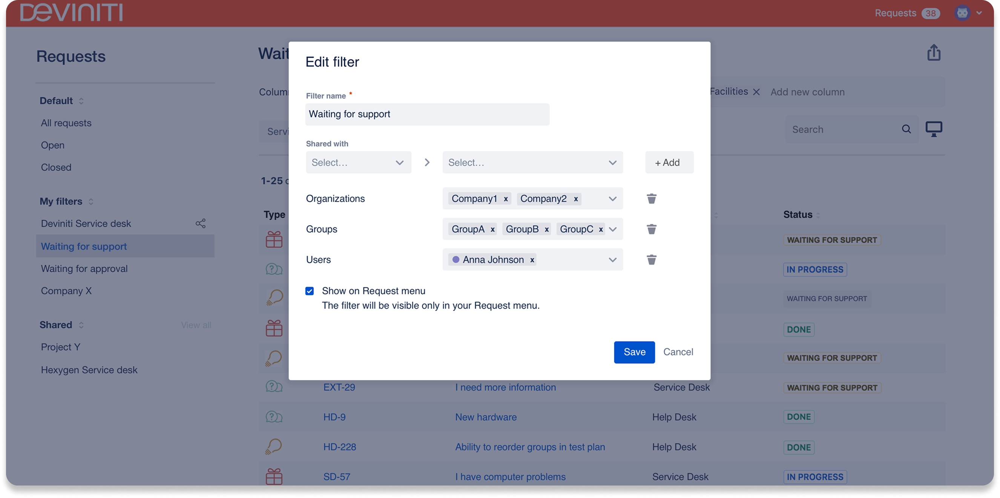
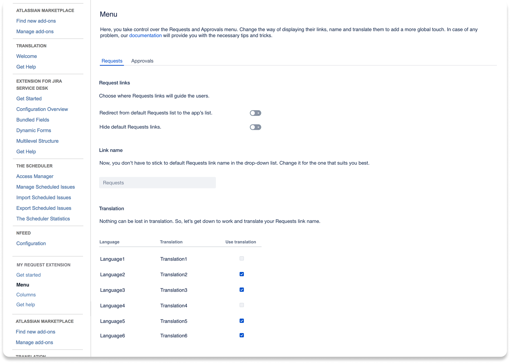
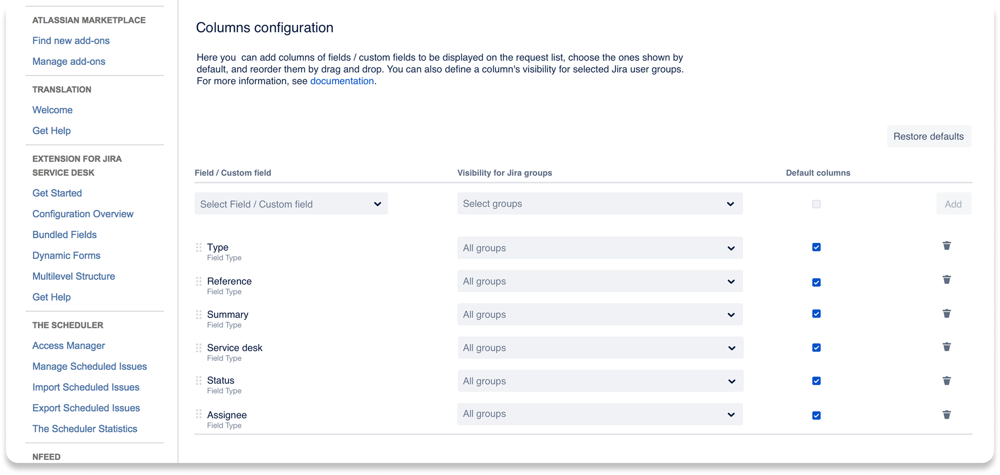

A redesign and feature extension of a Jira app that lets users track, filter and manage all their service requests in one place - without navigating standard Jira queues or losing context across projects.

The original app gave users a basic list of their Jira requests - but nothing more. No filtering, no sorting by project or status, no way to search by keyword. Users had to scroll through long lists manually, often losing track of critical items. The interface was functional but had not kept pace with how users actually worked.

Redesign including new functionalities to the existing application for Jira to prevent users from having to search for their requests in standard Jira queues based on tags. The goal was to make request management faster, more structured, and accessible to users without deep Jira knowledge.
The app needed to evolve from a passive list viewer into an active request management tool - one that could handle approvals, allow filtering across multiple parameters, and present information in a way that matched the mental model of the people using it every day.
I started with a review of the existing interface - annotating where users were getting stuck and what functionality was entirely absent. The sketch below captures the key gaps identified through user feedback and session observations before any design work began.

Before jumping to screens, I mapped the full information architecture of the redesigned app. The new structure introduced a clearer navigation model - separating Requests from Approvals and adding a dedicated help entry point - while keeping the customer's context always visible at the top level.

The redesigned app introduced a fully searchable, filterable request list with grouping by project, status and type. Users could now manage approvals directly from the same view, access request details without leaving the app, and configure their own column preferences.
The new interface was built around progressive disclosure - showing only what users needed at each step, while keeping advanced filtering and configuration accessible without cluttering the main view.




The redesigned My Requests Extension replaced a passive list with a fully functional request management workspace. Users no longer needed to navigate Jira's native queue system or use workarounds to track their own submissions across projects.
The addition of approval management within the same view was particularly well received - it reduced context switching for users who frequently needed to act on both submitted requests and pending approvals. The new column configuration feature became one of the most-used settings, reflecting how differently teams across organizations structure their Jira workflows.